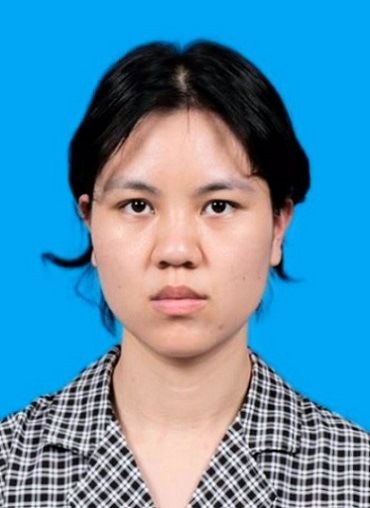

|
Jiayi Lin
Email: jiayi.lin@qmul.ac.uk
Jiayi Lin is a Ph.D. Candidate in Computer Science at
Queen Mary University of London,
supervised by Prof. Shaogang Gong.
She received her master's degree at School of Artificial Intelligence, University of Chinese Academy of Sciences
in 2021, supervised by Prof. Liang Wang.
And in 2018, she received her bachelor's degree from
Sun Yat-sen University.
Research Directions: Deep Learning, Computer Vision (Low-level Vision).
|

|